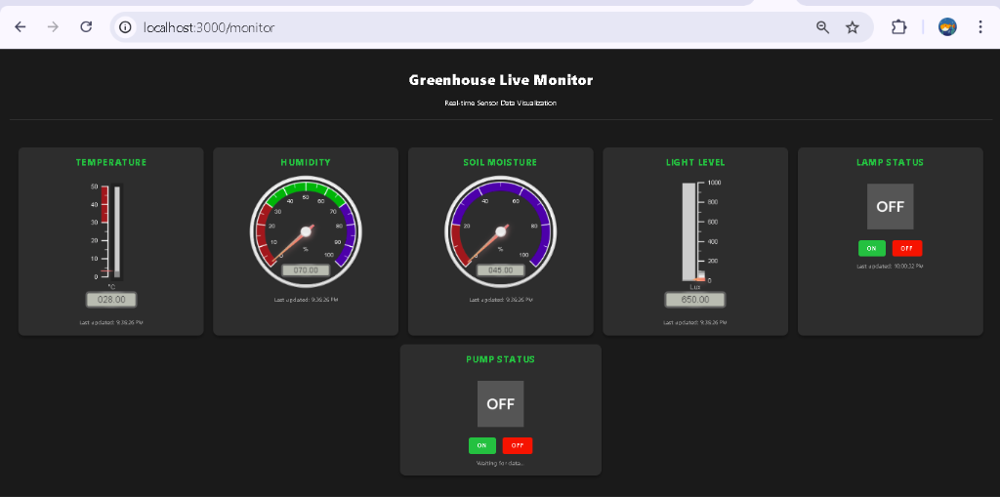
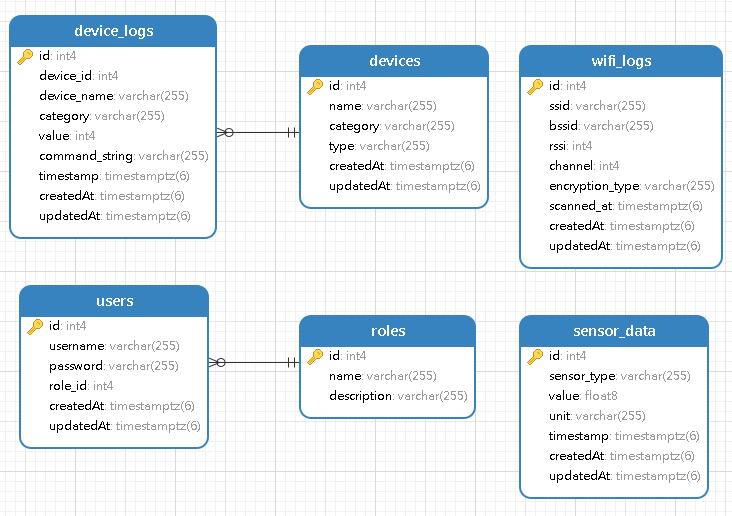

The Greenhouse IoT Backend API is a robust, scalable solution designed to monitor and control greenhouse environments. It serves as the central hub connecting IoT sensors, execution devices (lamps, pumps), and user facing dashboards.
Key capabilities include real-time data ingestion from sensors (Temperature, Humidity, Soil Moisture, Light), remote device control via MQTT, and historical data logging for analysis.
Figure 1: Real-time Monitoring Dashboard
The project employs a Layered Architecture to ensure Clean Code principles, separation of concerns, and maintainability.
| Component | Technology | Role |
|---|---|---|
| Runtime Environment | Node.js | Asynchronous, event-driven execution. |
| Web Framework | Express.js | Handling HTTP REST API requests. |
| Database | PostgreSQL | Relational storage for logs and sensor data. |
| ORM | Sequelize | Schema management and database abstraction. |
| Messaging | MQTT (Mosquitto) | Real-time M2M communication. |
[ IoT Sensors ] --(MQTT)--> [ Broker ] --(Sub)--> [ Backend Service ]
|
[ User / Web ] --(REST)--> [ API Layer ] --(ORM)--> [ Database ]
|
(Pub)
v
[ Broker ] --(MQTT)--> [ IoT actuators ]
The following diagram illustrates the entity relationships and data flow within the system, including the new User-Role authentication model and the link between Devices and their Logs.
Figure 2: Entity Relationship Diagram (ERD) & System Flow
MQTT (Message Queuing Telemetry Transport) is used for its lightweight, low-bandwidth nature, ideal for IoT devices.
sensor/# (e.g., sensor/temp) - The
backend listens for incoming data here.device/control - The backend sends commands to this
topic.Control messages follow a strict JSON schema for interoperability:
{
"device": "pump", // Target Device ID
"state": 1 // 1 = ON, 0 = OFF
}
The mqttService.js module manages a persistent connection to the broker.
It handles reconnection logic automatically and allows the rest of the application to publish messages
without knowing the underlying protocol details.
Reliability is critical in IoT systems. The application implements several strategies to handle failures gracefully:
We use Joi validation schemas for all API endpoints. This prevents malformed data (e.g., invalid device IDs or non-numeric sensor values) from penetrating the business logic layer.
If the MQTT broker or Database becomes unreachable:
500 Internal Server Error responses with descriptive
messages./status endpoint reflects the "disconnected" state, allowing monitoring tools to
detect the outage.PostgreSQL constraints (Not Null, Foreign Keys) and Sequelize model validation ensure that incomplete data is never stored. Devices are categorized automatically (Lighting, Irrigation, Ventilation) to prevent categorization errors.
While MongoDB is popular for JSON sensor data, PostgreSQL was chosen for its strict schema enforcement and powerful time-series capabilities. Structured relational data allows for easier reporting and complex queries (e.g., "Average temperature per hour").
A Monolithic function approach is hard to test. By separating Controllers (HTTP), Services (Logic), and Models (Data), we ensure that each part of the system can be tested and modified independently. For example, we could swap the MQTT library without touching the Controller code.